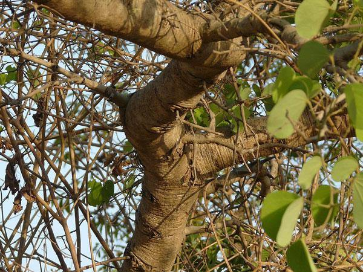

🌿 आपटा
English Name : Mountain Ebony
Scientific Name : Bauhinia racemosa

संक्षिप्त परिचय
आपटा हा भारतात आढळणारा एक महत्त्वाचा देशी वृक्ष आहे. आपट्याचे शास्त्रीय नाव Bauhinia racemosa असे आहे. हा वृक्ष प्रामुख्याने भारत, श्रीलंका आणि दक्षिण आशियातील उष्ण प्रदेशात आढळतो. महाराष्ट्रात आपट्याला धार्मिक व सांस्कृतिक महत्त्व मोठ्या प्रमाणावर दिले जाते. हा मध्यम आकाराचा, पानझडी वृक्ष आहे. साधारणपणे आपट्याची उंची ५ ते १२ मीटरपर्यंत वाढते. याची साल करडी किंवा फिकट तपकिरी रंगाची असते. साल किंचित खरबरीत व तडे गेलेली दिसते. आपट्याची पाने गोलसर व दोन भागांत विभागलेली असतात. पाने पाहिल्यास ती थोडी हृदयाच्या आकारासारखी वाटतात. पानांचा रंग हिरवट असून पानांच्या शिरा स्पष्ट दिसतात. उन्हाळ्यात या वृक्षाची पाने गळतात. पावसाळ्यात नव्या पालवीने वृक्ष पुन्हा हिरवागार होतो. आपट्याला लहान व फिकट पांढऱ्या किंवा क्रीम रंगाची फुले येतात. ही फुले साधारणपणे घोसामध्ये उमलतात. फुलांना सौम्य सुगंध असतो. आपट्याला फळे येतात, परंतु ती माणसांच्या खाण्यासाठी उपयोगी नसतात. आपट्याचे फळ म्हणजे लांबट व सपाट शेंग असते. या शेंगांमध्ये बिया असतात. फळांचा मुख्य उपयोग औषधी किंवा पारंपरिक उपचारांमध्ये होतो. आपट्याच्या बियांपासून नवीन रोपे तयार होतात. हा वृक्ष कोरड्या व दुष्काळी भागातही चांगला तग धरतो. आपट्याला धार्मिक दृष्ट्या विशेष महत्त्व आहे. विजयादशमी (दसरा) या सणाला आपट्याची पाने “सोने” म्हणून एकमेकांना दिली जातात. ही प्रथा महाराष्ट्रात विशेष प्रसिद्ध आहे. पौराणिक कथेनुसार पांडवांनी अज्ञातवासात आपली शस्त्रे आपट्याच्या झाडावर लपवली होती. विजयादशमीच्या दिवशी त्यांनी ती परत मिळवली, अशी मान्यता आहे. त्यामुळे आपटा विजय, यश आणि समृद्धीचे प्रतीक मानला जातो. आपट्याच्या पानांची देवपूजेमध्येही काही ठिकाणी वापर केला जातो. या वृक्षाला पवित्र मानले जाते. आयुर्वेदात आपट्याच्या साली, पानांचा आणि मुळांचा औषधी उपयोग सांगितला आहे. आपट्याची साल जखमा भरून काढण्यासाठी वापरली जाते. त्वचारोगांवरही तिचा उपयोग होतो, असे मानले जाते. पानांचा काढा ताप व सूज कमी करण्यासाठी वापरला जातो. आपटा हा पर्यावरणाच्या दृष्टीनेही उपयुक्त वृक्ष आहे. तो माती धरून ठेवण्यास मदत करतो. पक्षी आणि कीटकांसाठी हा वृक्ष आश्रयस्थान ठरतो. ग्रामीण भागात आपट्याचे लाकूड किरकोळ उपयोगांसाठी वापरले जाते. मात्र लाकूड फार मजबूत नसते. सावलीसाठी हा वृक्ष उपयुक्त ठरतो. रस्त्याच्या कडेला व मोकळ्या जागेत आपट्याची लागवड केली जाते. आपटा हा कमी देखभालीत वाढणारा वृक्ष आहे. त्यामुळे वृक्षलागवडीसाठी तो योग्य मानला जातो. धार्मिक, औषधी आणि पर्यावरणीय अशा तिन्ही दृष्टीने आपटा हा महत्त्वाचा वृक्ष आहे. भारतीय संस्कृतीत आपट्याला विशेष मानाचे स्थान दिले गेले आहे. त्यामुळे आजही सण-उत्सवांत आपट्याचे महत्त्व टिकून आहे.
वनस्पतीशास्त्रीय माहिती
🌿 कुल
Moraceae
🌱 रचना
आपटा हा मध्यम आकाराचा पानझडी वृक्ष आहे. याची उंची साधारणतः ५ ते १२ मीटरपर्यंत वाढते. खोड सरळ असून साल करडी ते फिकट तपकिरी रंगाची असते. साल खरबरीत असून त्यावर तडे गेलेले दिसतात. फांद्या पसरट स्वरूपाच्या असतात. पाने साधी, मोठी व दोन खंडांमध्ये विभागलेली असतात. पानांचा आकार गोलसर किंवा हृदयाकृती दिसतो. पानांच्या मध्यभागी खोल फट असते, जी पानाला दोन भागांत विभागते. पानांचा रंग हिरवा असून शिरा ठळक दिसतात. मुळे मजबूत असून जमिनीत खोलवर जातात, त्यामुळे झाड दुष्काळातही तग धरते.
🌼 फुले
आपट्याची फुले लहान आकाराची असतात. फुलांचा रंग फिकट पांढरा, क्रीम किंवा पिवळसर असतो. फुले घोस किंवा मंजरी स्वरूपात येतात. फुलांना सौम्य व हलका सुगंध असतो. फुलोरा साधारणतः फेब्रुवारी ते एप्रिल या कालावधीत दिसून येतो. फुलांमध्ये पुंकेसर व स्त्रीकेसर दोन्ही असतात. परागीभवन कीटकांद्वारे होते. फुलांनंतर लांबट, सपाट शेंगेसारखी फळे तयार होतात.
🌍 अधिवास
आपटा प्रामुख्याने उष्ण व कोरड्या हवामानात चांगला वाढतो. भारत, श्रीलंका व दक्षिण आशियातील प्रदेशात हा वृक्ष आढळतो. भारतात महाराष्ट्र, मध्य प्रदेश, राजस्थान, कर्नाटक व तमिळनाडू या राज्यांत आपटा मोठ्या प्रमाणावर आढळतो. हा वृक्ष कोरड्या, दगडी व कमी सुपीक जमिनीतही वाढू शकतो. जंगलाच्या कडा, माळरान, रस्त्याच्या बाजू आणि गावांच्या आसपास हा वृक्ष आढळतो. कमी पाण्यातही तग धरण्याची क्षमता असल्यामुळे वृक्षलागवडीसाठी तो उपयुक्त मानला जातो.
सामाजिक व सांस्कृतिक महत्त्व
आपटा झाड धार्मिक विधींमध्ये, पारंपरिक सण व उत्सवांमध्ये वापरले जाते. फळे, पाने व फुलं सजावटीसाठी उपयोगी आहेत. झाड सामाजिक आणि सांस्कृतिक कार्यक्रमात महत्वाचं स्थान राखते. शाळा-कॉलेज परिसर, सार्वजनिक उद्यान व घरांच्या बागांमध्ये हे झाड सौंदर्य व हरितायोजनासाठी लावले जाते. फळे पोषक असून स्थानिक बाजारात विकल्या जातात. झाड शहरी आणि ग्रामीण परिसरातील हरित क्षेत्र वाढवते.
काळजी व धोके
झाडाला पूर्ण सूर्यप्रकाश द्या, पण खूप उष्णतेत झाडाची काळजी घ्या.
पाणी पुरेसे द्या, पण पाण्याचा साच पडू न देणे महत्त्वाचे आहे. फळे व पाने हाताळताना संवेदनशीलता लक्षात ठेवा.